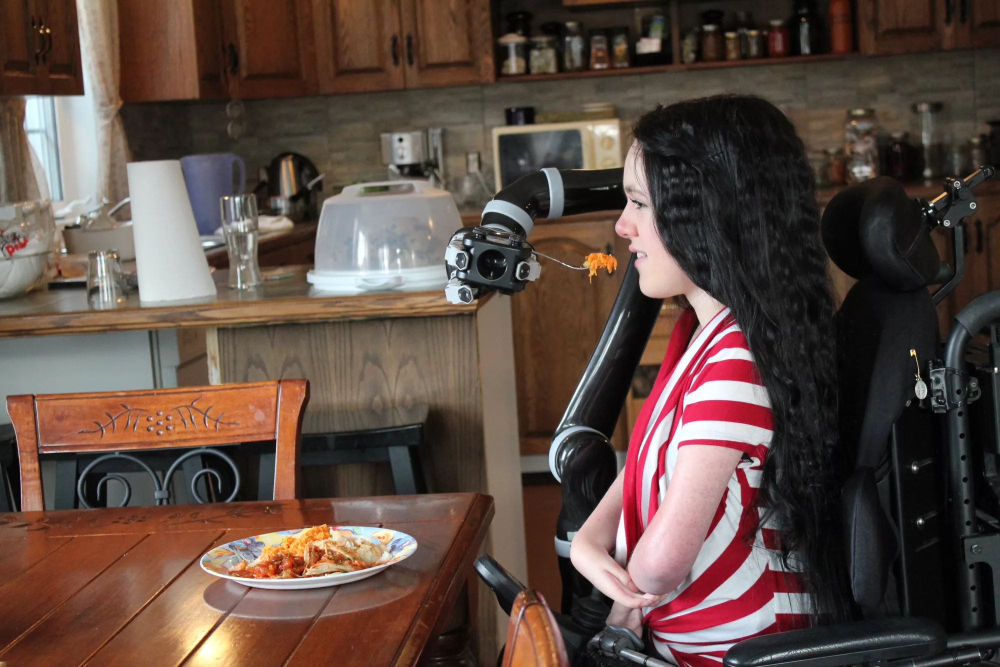
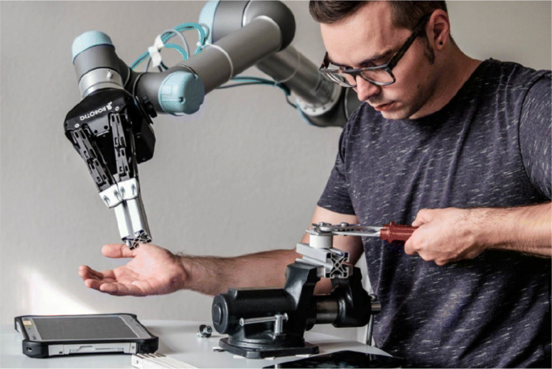
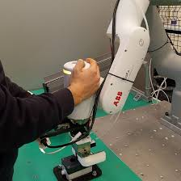
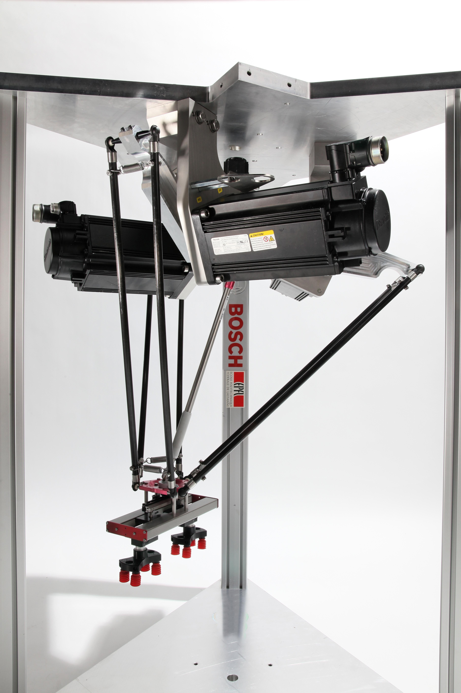

École polytechnique fédérale de Lausanne (EPFL) / Course ENG-654
Kinematics-Grounded
Motion Planning
for Robots

Real-world motion
Motion planning is everywhere
Every useful robot action depends on a feasible motion.
The limits of a successful demonstration
When motion fails
Can the robot execute
the whole path?
A reachable goal does not establish a feasible motion to it.
Joint limits and collisions
Lost motion directions (singularities)
Continuous joint motion
Why this matters now
From industry to everyday life



Robots have moved from industrial settings into everyday life.
Assistive and collaborative robots now interact directly with people.
Motion planning with guarantees is essential for safe human–robot interaction.
The engineering standard we will develop
Global analysis and guarantees
Feasibility over
the entire motion.
- The allowed robot posturesWhere do joint limits, collisions and singularities restrict motion?
- The connections between posturesWhich postures can the robot move between continuously?
- The evidence for executionWhich constraints hold along the path, and what remains unverified?
A guarantee is relative to the model and constraints. Checking isolated samples alone does not certify the motion between them.
Part I
Serial robots and motion planning
- 01Understand the modelCoordinate systems and descriptions of robot geometry
- 02Analyse the constraintsFind joint positions that reach a target and respect motion limits
- 03Understand global propertiesFind which robot postures can connect through continuous motion
- 04Use redundancyUse extra joints to gain more ways to complete a task
- 05Verify the complete motionCheck that the robot can follow the entire path within its limits
Plan a continuous motion
and justify its feasibility.
- PUMA 560 robot · 6 jointsWidely used industrial robot
- KUKA iiwa LWR robot · 7 jointsWidely used collaborative robot
- Custom robots with 3 and 6 jointsFor in-depth analysis of robots
Part II
Parallel robots: design, kinematics and interaction

The most famous parallel robot.
Design patented by
Professor Reymond Clavel, EPFL.
| Serial robots | Parallel robots |
|---|---|
| One chain of connected joints | Several chains supporting one platform |
| Combine the motion of each joint | Solve for all connected chains together |
| Motors often move with the arm | Motors at the base can reduce moving mass |
Design analysisHow geometry shapes the reachable area and performance
Kinematics and singularitiesPossible postures and limits on motion and control
InteractionHow easily a person can guide the robot by hand
Parallel robots in interaction
Redundancy for intuitive interaction
One robot.
Two modes.
Redundancy provides extra freedom to adapt the robot’s motion during physical interaction.
Handle freeTask mode
Handle graspedCollaborative mode
Intuitive human–robot interaction.
Part II
Parallel robots and their design
- 01Parallel robot topologiesHow links and joints are connected
- 02Different types of parallel robotsCompare designs and the motions they allow
- 03Kinematic modellingRelate joint movement to platform movement
- 04Singularities and their geometric understandingFind postures where motion or control is lost
- 05Kinematic and actuation redundancyExtra joints or motors that add design choices
How to design
parallel robots.
The course objective
A motion you can
explain and verify.
Read its model and identify the constraints that govern motion.
Use global properties to reason about the complete path.
Explain what has been verified and the assumptions it relies on.
Let’s begin with the robot itself.